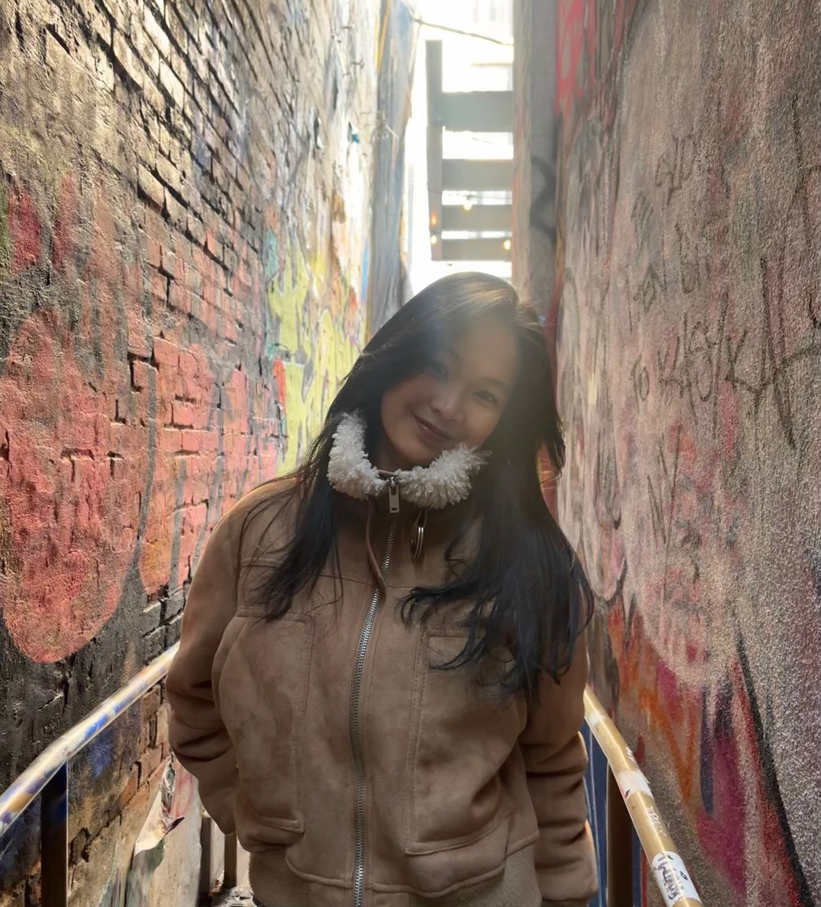

About The Artist
My name is Linda Yang. I am a sophmore studying computer science at New York University, and I like exploring visual art in my free time. My work primarily consists of sketches and digital art, for which I tend to use chalk. Ultimately, this portfolio presents a selection of artworks that reflect my creative process, experimentation, and visual storytelling approach. Each piece is an exploration my personal expression through design.